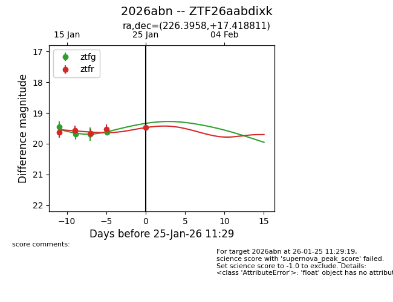
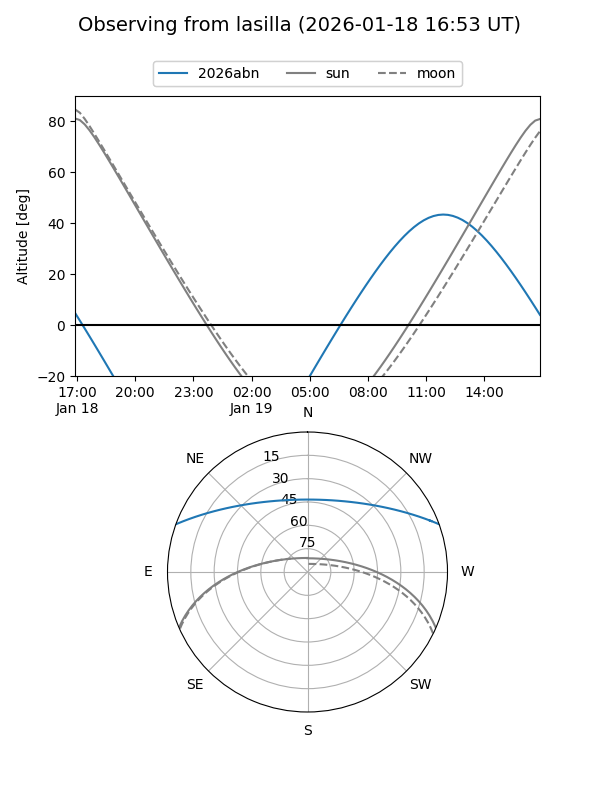
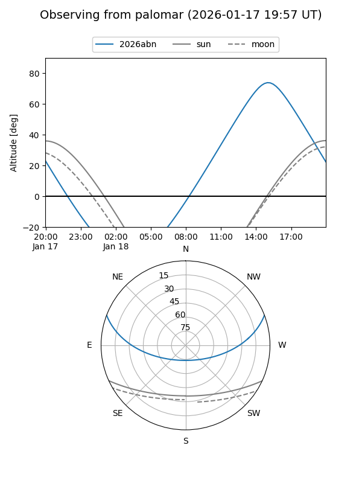
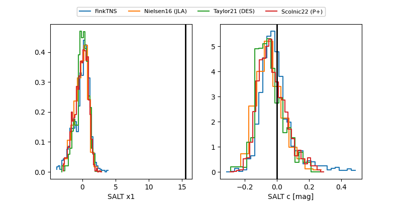

2026abn
Target 2026abn at 2026-01-18 12:40
Aliases and brokers:
FINK: link
Lasair: link
ALeRCE: link
TNS: link
YSE: link
alt names
ZTF26aabdixk (ztf,fink_ztf)
2026abn (tns,yse)
Coordinates:
equatorial (ra, dec) = 226.3958,+17.41881
equatorial (HMS+DMS) = 15:05:34.99,+17:25:07.72
galactic (l, b) = (22.5865,+57.59899)
Flags:
Photometry:
last ztfg=19.69, ztfr=19.67
3 ztfg, 3 ztfr detections
Lightcurve

Visibility


Additional plots
